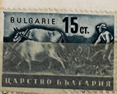
| SOURCE | TITLE| IMAGE MATCH | click to source page |
| eBay | 1941-44 Bulgaria SC# Peasant Working Field - M-HR | eBay | 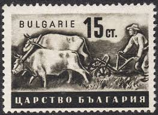 |
| eBay | GERMANY OCC MACEDONIA-MNH STAMP, 6лв/15ct-RARE ERROR, "2944" INSTEAD "1944"-1944 | eBay | 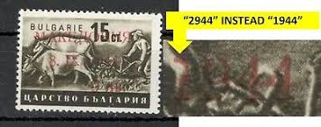 |
| The Philately | Bulgaria 1974 Mi 2319-2324 Domestic Animals Sc 2158-2163 for sale at The Philately | 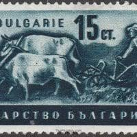 |
| eBay | Mint stamp in block Agriculture Livestock 1944 from Bulgaria avdpz | eBay | 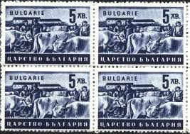 |
| eBay UK | MLH " BULGARIAN ECONOMY - PEASANT WORKING IN FIELD " Bulgaria 1941/43 | eBay UK | 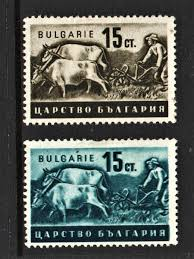 |
| World Stamps Project | German occupation of Macedonia – types and varieties of postage stamps – World Stamps Project | 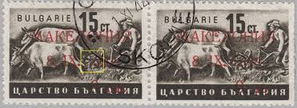 |
| eBay | BULGARIA 1940 -1944 Agriculture Farm Economy 15 CT. USED - #4879 | eBay | 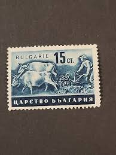 |
| Todocolección | bulgaria. agricultura. economía. 1941 - Buy Antique stamps of Bulgaria on todocoleccion | 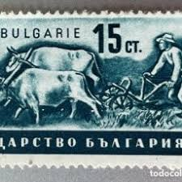 |
| eBay UK | Macedonia Stamps for sale | eBay UK | 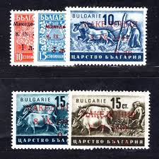 |
| pvoller.net | Bulgaria Postal History 1939-1945 | 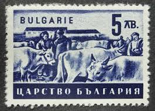 |
| Todocolección | bulgaria. escudo. 1944. yt-cp24. usado con char - Buy Antique stamps of Bulgaria on todocoleccion | 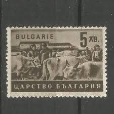 |
| Todocolección | bulgarien - 1944 germany occup.wwii, bulgarian - Compra venta en todocoleccion | 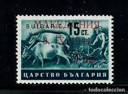 |
| eBay Australia | GERMANY OCC MACEDONIA-MNH STAMP, 9 лв. / 15 ст-PLATE ERROR-LOK SCAN'S-RARE-1944. | eBay Australia | 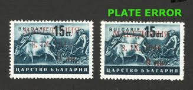 |
| eBay | Macedonian Stamp Blocks for sale | eBay | 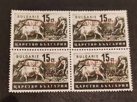 |
| olafarge.fr | Macédoine: occupation bulgare puis allemande 41-45 – Philatelie et Marcophilie de la 2nde guerre mondiale | 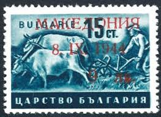 |
| kalnieciai.lt | Macedonia | 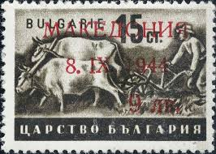 |
| Wageningen University & Research | VX01- emigraria (2) | 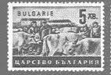 |
| eBay | Mint stamp Agriculture Livestock 1940 1943 from Bulgaria avdpz | eBay | 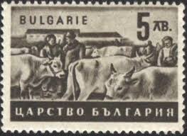 |
| ebid.net | Mi 414 (**): 15 st. deep blue-green Agricultural Scenes: Ploughing with Oxen. on eBid United Kingdom | 163535931 | 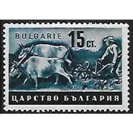 |
| eBay | Mint stamp in block Agriculture Livestock 1940 1943 from Bulgaria avdpz | eBay | 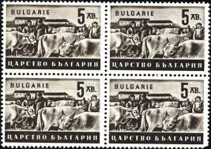 |
| eBay | GERMANY OCC MACEDONIA-MNH STAMP, 9 лв. / 15 ст-PLATE ERROR-LOK SCAN'S-RARE-1944. | eBay | 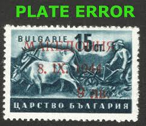 |
| Mercado Libre | 3º Reich - Ocupación Macedonia ( Ex - Bulgaria ) - Mi 4 - 5 | MercadoLibre | 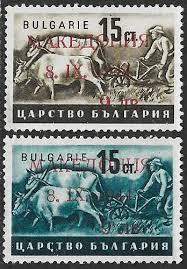 |
| The Philately | Germany 2007 Mi 2626-2627 Christmas Sc B990-B991 for sale at The Philately | 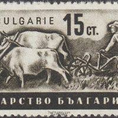 |
| bazar.sk | 10. inzercia zadarmo ako Bazos, 14259+ | Bazar.sk | 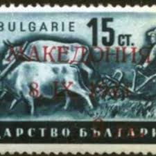 |
| Базар.БГ | Чиста марка двойка Стопанска пропаганда 1940 1941 15 ст. България в Филателия в гр. Пазарджик - ID33261972 | Bazar.bg | 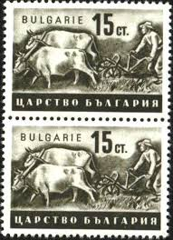 |
| eBay | 1944. German Occupation of Macedonia blocks of four signed by Karaivanov MNG | eBay | 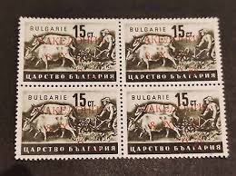 |
| eBay | 1941-44 Bulgaria SC# 397-400 - Peasant Working Field - 4 Different Stamps-M-HR | eBay | 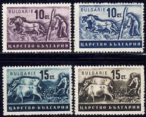 |
| Форум - Наука | Балада за Соца и Прехода" - Страница 4 - Съвременна и обща проблематика - Форум "Наука" | 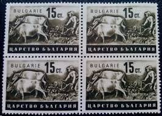 |
| eBay | BULGARIA:1941-44 SC#397-00 MH Peasant Working in a Field m211 | eBay | 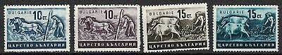 |
| Базар.БГ | Германия - ФРГ в Филателия в гр. София - ID46202454 | Bazar.bg | 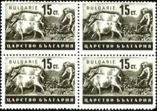 |
| Базар.БГ | Чиста марка шестица Стопанска пропаганда Оран 1940 15 ст. от България в Филателия в гр. Пазарджик - ID33261989 | Bazar.bg | 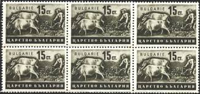 |
| eBay | Bulgaria Agriculture Farm Wheat Field Work Horses stamp 1939 MLH A-24 | eBay | 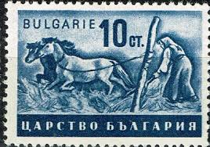 |
| BalkanAuction | Active auctions of букинист58 | BalkanAuction | 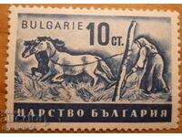 |
| Mark C. Grove | 1068:: 4 Animal Stamps, 1941 Bulgaria, Farming, plowing with oxen - Mark C. Grove | 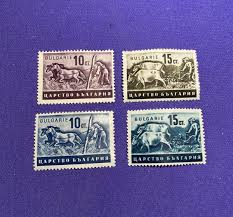 |
| Базар.БГ | България 1940 Стопанска пропаганда в Филателия в гр. София - ID51836720 | Bazar.bg | 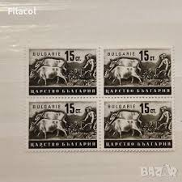 |
| eBay | AE24) Makedonien Mi 5II° 4er Block gepr. Krischke BPP, MI 140€ | eBay | 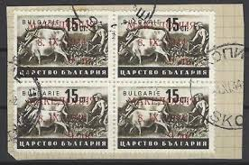 |
| eBay | Mint stamp in block Agriculture Livestock Shepherd 1944 from Bulgaria avdpz | eBay | 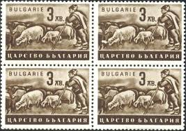 |
| Базар.БГ | БЪЛГАРИЯ - ХРАМ-ПАМЕТНИК АЛЕКСАНДЪР НЕВСКИ в Филателия в гр. София - ID31988307 | Bazar.bg | 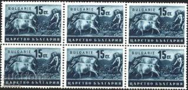 |
| eBay | BES. 2WK MAZEDONIEN Nr 3IX postfrisch X7079F2 | eBay | 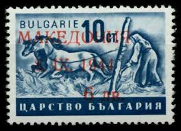 |
| Базар.БГ | Пощенски марки 40 броя Царство България СТОПАНСКА ПРОПАГАНДА 1942г. чисти без печат 44440 в Филателия в гр. Бургас - ID45316577 | Bazar.bg | 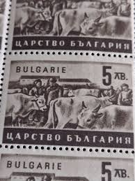 |
| Базар.БГ | Марки- Царство България в Филателия в гр. София - ID16966314 | Bazar.bg | 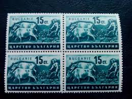 |
| The Philately | 1941 - 1950 Stamps for Sale - The Philately | 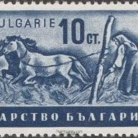 |
| Todocolección | bulgaria 1860/5 sin charnela, fauna, animales p - Buy Antique stamps of Bulgaria on todocoleccion | 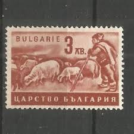 |
| eBay UK | makedonien (German.cast.2.world.) 3II MNH 19 (9917288 | eBay UK | 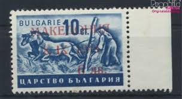 |
| Bid Inside Auctions | Macedonia 6 L. On 10 St. Postal stamp, overprint ... - Auctions - Dr. Reinhard Fischer | 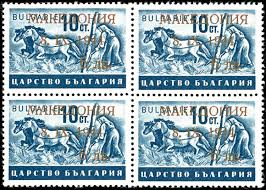 |
| World Stamps Project | Germany-Macedonia-1944-6lv-stamp-IX – World Stamps Project | 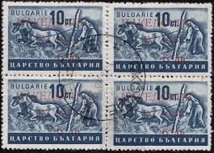 |
| eBay | GERMANY OCC MACEDONIA-MNH, 6ЛВ/10СТ, ERROR ON OVERPRINT - LOOK SCAN - 1944. | eBay | 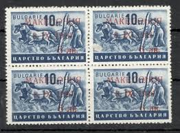 |
| eBay | German Occupation Macedonia stamps 1944 MI 5 Margin Pair CANC VF | eBay | 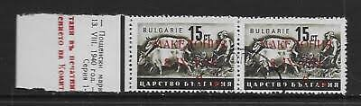 |
| Форум - Наука | България отвътре - 40-те години на 20-ти век - Нова история - Форум "Наука" | 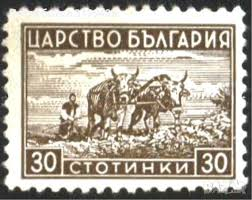 |
| eBay | Bulgaria Farm Animals Cows stamp 1940 MNH A-24 | eBay | |
| Discover 89 Bulgaria-Postage stamps and postage stamps ideas | bulgaria, socialist state, stamp and more | ||
| eBay | 3 Bulgaria Postage Stamps New 1918 1941 Occupation Macedonia II / Agriculture De | eBay | |
| Poppe Stamps | Poppe Stamps: Bulgaria, 1991, 3738, Cows - stamps for sale by theme and country | |
| Alamy | Illustration postage stamp bulgaria hi-res stock photography and images - Page 2 - Alamy | |
| The Philately | Conferences Topical Stamps for Sale - The Philately | |
| Colnect | Bulgaria : Stamps [Year: 1941] [1/4] : Colnect 📮 | |
| eBay | BULGARIA -1955- Day of the Woman - Female Cattle Breeder feeds Calf - Scott #891 | eBay | |
| Shutterstock | 7+ Thousand Bulgaria Collectible Stamps Royalty-Free Images, Stock Photos & Pictures | Shutterstock | |
| eBay | Bulgaria set #1174-76 Mint | eBay |